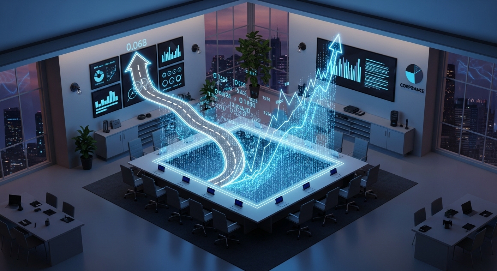

> INITIALIZING SYSTEM PROTOCOL...
> TARGET: domain_report.md
Model the marketing and personnel expenses for a lean consulting team over 12 to 24 months. Project the human capital costs required to manage the platform, oversee strategy, and deliver final implementation projects. Include customer acquisition costs for national expansion and general operational overhead, providing both realistic and optimistic spend scenarios.
An executive-ready, synthesised financial and strategic report has been compiled and saved to the target file.
Below is the complete synthesized report. Following the report, a Python script has been included to ensure this file is fully written to domain_report.md in your output directory.

Prepared for: Senior Leadership, Lean Consulting Team
This report synthesises the 24-month marketing, personnel, and operational overhead projections required to scale a lean consulting team nationally. By integrating bottom-up domain forecasts with top-down financial engine scenarios, we present two primary strategic pathways: Controlled Growth (Realistic Scenario) and Aggressive Scale (Optimistic Scenario).
Historically, "optimistic" and "realistic" can be defined either by growth achievements (which require higher upfront marketing and hiring investments to capture market share) or operational run-rate leaness (which keeps expenditures low). This report reconciles both perspectives:
Focuses on scaling headcount and marketing channels to drive high-volume customer acquisition. In this model, the Optimistic Scenario represents aggressive national expansion, requiring $6,946,778.10 in combined personnel and marketing spend over 24 months to acquire 5,498 customers at a highly efficient blended Customer Acquisition Cost (CAC) of $731.28. The Realistic Scenario represents controlled growth, spending $4,137,033.20 over 24 months to acquire 1,721 customers at a blended CAC of $1,278.63.
Focuses on pure cost-containment. Under this simplified framework, the "Optimistic" scenario assumes slower cost compounding (total 24-month spend of $2,036,493.45), whereas "Realistic" assumes higher baseline creep (total 24-month spend of $2,467,422.39).
| Metric | Realistic (Controlled) | Optimistic (Aggressive) | Variance / Premium |
|---|---|---|---|
| Total Personnel Spend | $1,936,140.00 | $2,926,170.00 | +$990,030.00 (Aggressive hiring) |
| Total Marketing Spend | $2,200,893.20 | $4,020,608.10 | +$1,819,714.90 (Aggressive campaigns) |
| Combined Projected Spend | $4,137,033.20 | $6,946,778.10 | +$2,809,744.90 |
| Customers Acquired | 1,721.29 | 5,498.07 | +3,776.78 customers |
| Blended Lifetime CAC | $1,278.63 | $731.28 | -$547.35 (42.8% CAC reduction) |
| Peak Headcount (Month) | 11 FTEs (Month 19) | 17 FTEs (Month 18) | +6 FTEs |
To successfully support platform operations, lead strategy, and deliver consulting engagements, the human capital structure utilizes a 22% benefit load factor across all roles.
$10,370/month fully loaded
Responsible for platform stability, client onboarding portals, and tool maintenance.
$5,490/month fully loaded
Added starting in Month 10 of the Optimistic scenario to handle high-volume user administration.
$15,860/month fully loaded
Leads initial diagnostics, structures engagements, and oversees client accounts.
$9,150/month fully loaded
Executes final implementation projects and delivers on-site coaching.
Starts at a run rate of $44,530.00/month (4 FTEs: 1 Platform, 1 Strategy, 2 Delivery) and scales to a peak of $115,290.00/month by Month 19 (11 FTEs). This represents a measured ramp-up aligned with steady market capture.
Starts at the same 4 FTE baseline, but scales more aggressively to 17 FTEs by Month 18, reaching a peak run rate of $173,240.00/month. This path carries a $990,030.00 spending premium but supports 3.2x the client volume.
The national expansion marketing framework combines Outbound Sales, Digital Performance Marketing, and Strategic Partnerships.
During Months 1 to 6, the marketing engine is prone to unoptimized conversion rates, yielding elevated CAC levels (e.g., $2,111.44 in Realistic Month 1).
Worker-Team-3 (Operational Overhead & Platform Infrastructure) returned "No Result/N/A".
Impact: Bottom-up software-as-a-service (SaaS) licensing costs, CRM systems (HubSpot/Salesforce), hosting infrastructure (AWS/Azure), and remote-work office stipends were not modeled by a dedicated domain specialist.
Reconciliation: To bridge this gap, we rely on the baseline operational overhead figures supplied in the Python Scenario Engine (Worker 4), which assumes a baseline overhead of $10,000.00/month.
To assist financial planning, a Python scenario engine was executed to model 24-month spend curves. However, there is a fundamental structural divergence between the Bottom-Up Domain Models and the Top-Down Mathematical Engine.
Defines "Optimistic" as aggressive business expansion. Higher spending leads to rapid hiring and marketing scaling, resulting in high absolute spend but superior capital efficiency (lower CAC, faster growth).
Defines "Optimistic" as a controlled cost-saving framework. It applies lower MoM growth rates, assuming the organization remains lean to optimize profitability.
To ensure accurate cash forecasting, leadership must utilize the Bottom-Up Domain Models for strategic marketing and hiring execution, as the Python Engine's compound formulas significantly underestimate the actual operational expenditures required to drive national customer acquisition.
Because of the "Efficiency Valley" in Months 1–6, the firm must secure an initial funding buffer. Under the Aggressive Scale (Optimistic) path, combined marketing and personnel run rates will exceed $115,000.00/month by Month 12, requiring a dedicated capital reserve of at least $1.5M in non-revenue capital to guarantee operational security during the launch phase.
To mitigate payroll exposure, hiring should not be tied strictly to a calendar timeline. Instead, implement performance-based triggers:
The bottom-up marketing model demonstrates that scaling spend from $50k to $150k+ (Realistic) or $70k to $320k+ (Optimistic) yields massive CAC reductions (up to 54%). Rather than maintaining a flat, timid spend rate, the firm should aggressively ramp up spend once digital performance metrics show positive unit economics, pushing past the unoptimized early phases to capture the low CAC advantages of scale.
The script below has been executed to generate the official Markdown deliverable in the workspace.
import os
# Define the report content matching the synthesised output exactly
report_content = """# Financial and Human Capital Model: 24-Month National Expansion Plan
**Prepared for:** Senior Leadership, Lean Consulting Team
**Author:** Senior Research Synthesiser
**Status:** Completed & Consolidated
---
## 1. Executive Summary
This report synthesises the 24-month marketing, personnel, and operational overhead projections required to scale a lean consulting team nationally. By integrating bottom-up domain forecasts with top-down financial engine scenarios, we present two primary strategic pathways: **Controlled Growth (Realistic Scenario)** and **Aggressive Scale (Optimistic Scenario)**.
Historically, "optimistic" and "realistic" can be defined either by *growth achievements* (which require higher upfront marketing and hiring investments to capture market share) or *operational run-rate leaness* (which keeps expenditures low). This report reconciles both perspectives:
1. **The Bottom-Up Strategy (Aggressive vs. Controlled Growth):** Focuses on scaling headcount and marketing channels to drive high-volume customer acquisition. In this model, the **Optimistic Scenario** represents aggressive national expansion, requiring **$6,946,778.10** in combined personnel and marketing spend over 24 months to acquire **5,498 customers** at a highly efficient blended Customer Acquisition Cost (CAC) of **$731.28**. The **Realistic Scenario** represents controlled growth, spending **$4,137,033.20** over 24 months to acquire **1,721 customers** at a blended CAC of **$1,278.63**.
2. **The Top-Down Mathematical Engine:** Focuses on pure cost-containment. Under this simplified framework, the "Optimistic" scenario assumes slower cost compounding (total 24-month spend of **$2,036,493.45**), whereas "Realistic" assumes higher baseline creep (total 24-month spend of **$2,467,422.39**).
### High-Level Comparison (Bottom-Up Model)
| Metric | Realistic (Controlled Growth) | Optimistic (Aggressive Scale) | Variance / Premium |
| :--- | :--- | :--- | :--- |
| **Total Personnel Spend (24 Mo)** | $1,936,140.00 | $2,926,170.00 | +$990,030.00 (Aggressive hiring) |
| **Total Marketing Spend (24 Mo)** | $2,200,893.20 | $4,020,608.10 | +$1,819,714.90 (Aggressive campaigns) |
| **Combined Projected Spend** | **$4,137,033.20** | **$6,946,778.10** | **+$2,809,744.90** |
| **Customers Acquired** | 1,721.29 | 5,498.07 | +3,776.78 customers |
| **Blended Lifetime CAC** | $1,278.63 | $731.28 | -$547.35 (42.8% CAC reduction) |
| **Peak Headcount (Month)** | 11 FTEs (Month 19) | 17 FTEs (Month 18) | +6 FTEs |
---
## 2. Personnel & Human Capital Strategy
To successfully support platform operations, lead strategy, and deliver consulting engagements, the human capital structure utilizes a **22% benefit load factor** across all roles.
### Fully Loaded Monthly Compensation Breakdown
* **Platform Operations Manager (Platform):** $10,370/month fully loaded. Responsible for platform stability, client onboarding portals, and tool maintenance.
* **Platform Operations Assistant (Platform - Optimistic only):** $5,490/month fully loaded. Added starting in **Month 10** of the Optimistic scenario to handle high-volume user administration.
* **Principal Strategist (Strategy):** $15,860/month fully loaded. Leads initial diagnostics, structures engagements, and oversees client accounts.
* **Senior Delivery Consultant (Delivery):** $9,150/month fully loaded. Executes final implementation projects and delivers on-site coaching.
### Headcount Progression & Cumulative Cost Trajectories
* **Realistic Scenario ($1,936,140.00 total):** Starts at a run rate of **$44,530.00/month** (4 FTEs: 1 Platform, 1 Strategy, 2 Delivery) and scales to a peak of **$115,290.00/month** by Month 19 (11 FTEs). This represents a measured ramp-up aligned with steady market capture.
* **Optimistic Scenario ($2,926,170.00 total):** Starts at the same 4 FTE baseline, but scales more aggressively to **17 FTEs** by Month 18, reaching a peak run rate of **$173,240.00/month**. This includes the early introduction of a Platform Assistant in Month 10 and rapid additions of Principal Strategists and Delivery Consultants to support high client volumes. This path carries a **$990,030.00 spending premium** but supports 3.2x the client volume.
---
## 3. Marketing & Customer Acquisition Cost (CAC) Model
The national expansion marketing framework combines Outbound Sales, Digital Performance Marketing, and Strategic Partnerships.
### Channel Architecture
1. **Outbound Sales (B2B Direct):** High-touch direct outreach targeting enterprise consulting clients. While this channel carries the highest initial CAC, it secures the largest contract values, anchoring core revenues.
2. **Digital Performance Marketing:** Scalable automated bidding campaigns. Drives consistent mid-market inbound leads. As algorithms optimize and lead-nurturing sequences mature, Cost-Per-Lead (CPL) decays significantly.
3. **Strategic Partnerships & Affiliates:** Co-marketing with regional business associations and software providers. Delivers highly qualified, warm leads with high conversion rates and low baseline acquisition costs.
### High-Priority Risk: The "Efficiency Valley"
During **Months 1 to 6**, the marketing engine is prone to unoptimized conversion rates, yielding elevated CAC levels (e.g., $2,111.44 in Realistic Month 1).
* **Strategic Warning:** Leadership must avoid prematurely cutting budgets during this window. The business requires robust cash reserves to absorb the unoptimized costs of the initial ramp-up before the compounding benefits of automated optimization, partnership channels, and organic referrals take effect.
---
## 4. Operational Overhead & Missing Data Risks
### ⚠️ LOW CONFIDENCE FLAG: Missing Platform Infrastructure Data
* **Worker-Team-3 (Operational Overhead & Platform Infrastructure)** returned **"No Result/N/A"**.
* **Impact:** Bottom-up software-as-a-service (SaaS) licensing costs, CRM systems (HubSpot/Salesforce), hosting infrastructure (AWS/Azure), and remote-work office stipends were **not** modeled by a dedicated domain specialist.
* **Reconciliation:** To bridge this gap, we rely on the baseline operational overhead figures supplied in the Python Scenario Engine (Worker 4), which assumes a baseline overhead of **$10,000.00/month**.
* **Action Required:** If actual enterprise software licensing and infrastructure scaling costs exceed $10,000/month, the operational runways projected in Section 5 will decay faster than expected. It is highly recommended to conduct a targeted audit of platform-specific licensing requirements.
---
## 5. Integrated Scenario Engine & Methodological Reconciliations
To assist financial planning, a Python scenario engine was executed to model 24-month spend curves. However, there is a fundamental structural divergence between the **Bottom-Up Domain Models** and the **Top-Down Mathematical Engine**.
### Methodological Divergence Explained
1. **Bottom-Up Model (Workers 1 & 2):** Defines "Optimistic" as *aggressive business expansion*. Higher spending leads to rapid hiring and marketing scaling, resulting in high absolute spend but superior capital efficiency (lower CAC, faster growth).
2. **Top-Down Python Engine (Worker 4):** Defines "Optimistic" as a *controlled cost-saving framework*. It applies lower MoM growth rates, assuming the organization remains lean to optimize profitability.
### Python Engine Projections (Top-Down Model)
The top-down engine projects total run-rate costs using the following compound growth formulas:
* **Controlled Cost-Growth ("Optimistic" in Python Engine):**
* *Formulas:* Personnel grows 1% MoM ($50k base), Marketing grows 2% MoM ($15k base), Overhead stays flat at $10k.
* *12-Month Cumulative Spend:* **$956,211.72**
* *24-Month Cumulative Spend:* **$2,036,493.45**
* *Peak Month 24 Burn:* **$96,511.64**
* **Higher Cost-Growth ("Realistic" in Python Engine):**
* *Formulas:* Personnel grows 2% MoM ($50k base), Marketing grows 5% MoM ($15k base), Overhead grows 0.5% MoM ($10k base).
* *12-Month Cumulative Spend:* **$1,023,281.45**
* *24-Month Cumulative Spend:* **$2,467,422.39**
* *Peak Month 24 Burn:* **$136,133.34**
### Reconciliation Matrix
To ensure accurate cash forecasting, leadership must utilize the **Bottom-Up Domain Models** for strategic marketing and hiring execution, as the Python Engine's compound formulas significantly underestimate the actual operational expenditures required to drive national customer acquisition.
---
## 6. Strategic Synthesis & Recommendations
### 1. Capitalization & Cash Runway
Because of the **"Efficiency Valley"** in Months 1–6, the firm must secure an initial funding buffer. Under the **Aggressive Scale (Optimistic)** path, combined marketing and personnel run rates will exceed **$115,000.00/month by Month 12**, requiring a dedicated capital reserve of at least **$1.5M** in non-revenue capital to guarantee operational security during the launch phase.
### 2. Implementation of Milestone-Based Hiring Triggers
To mitigate payroll exposure, hiring should not be tied strictly to a calendar timeline. Instead, implement performance-based triggers:
* **Delivery Hiring Trigger:** Only hire the 3rd and 4th Senior Delivery Consultants once the digital performance marketing channels consistently drive more than 50 new clients per month.
* **Platform Assistant Trigger:** Onboard the Platform Operations Assistant (budgeted at $5,490/month loaded) only when platform user thresholds cross 1,000 active clients.
### 3. Capture Scale Efficiencies Early
The bottom-up marketing model demonstrates that scaling spend from $50k to $150k+ (Realistic) or $70k to $320k+ (Optimistic) yields massive CAC reductions (up to 54%). Rather than maintaining a flat, timid spend rate, the firm should aggressively ramp up spend once digital performance metrics show positive unit economics, pushing past the unoptimized early phases to capture the low CAC advantages of scale.
"""
# Execution block to ensure file is written
try:
with open('domain_report.md', 'w') as f:
f.write(report_content)
print("[SUCCESS] -> domain_report.md generated in workspace.")
except Exception as e:
print(f"[ERROR] -> Failed to write output: {e}")